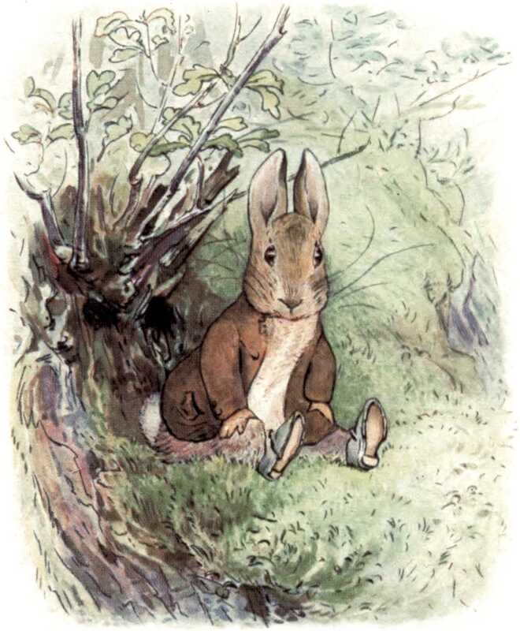
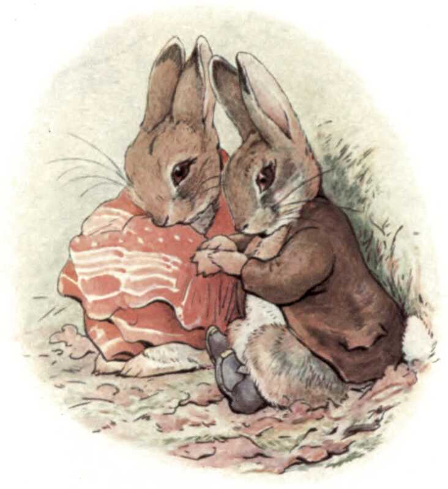
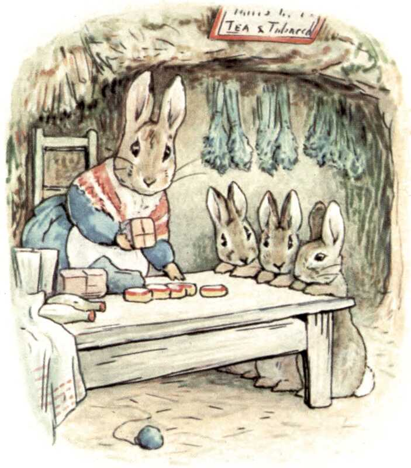
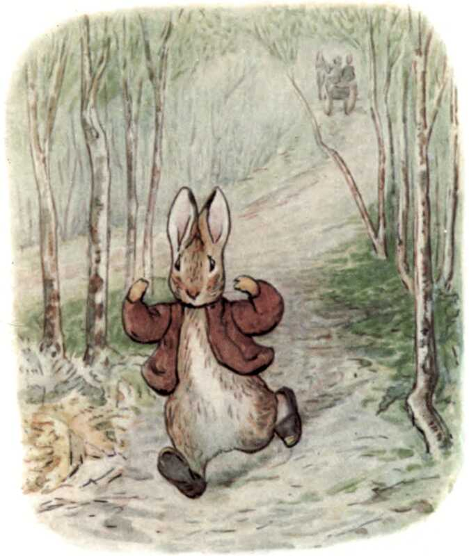
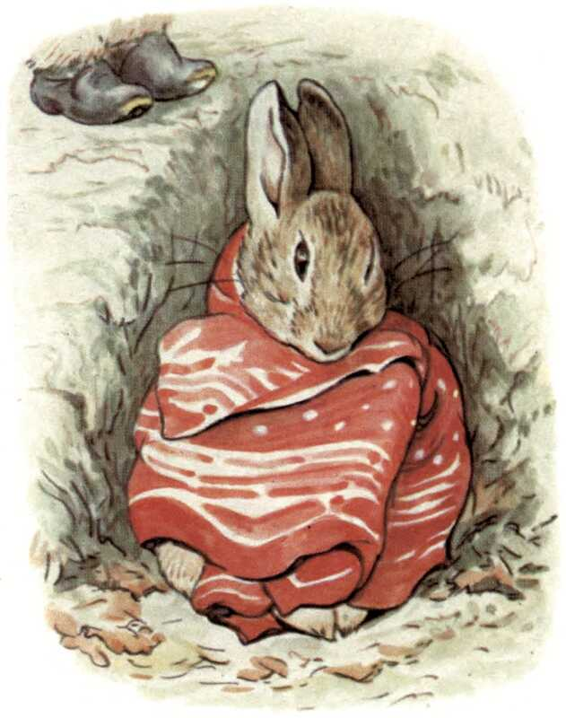
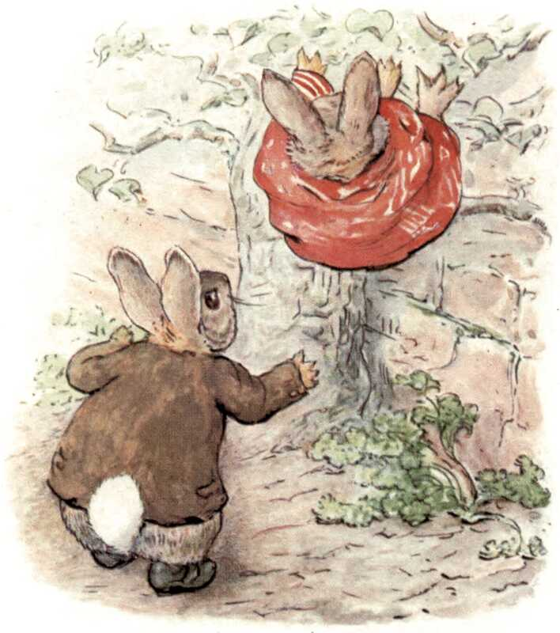
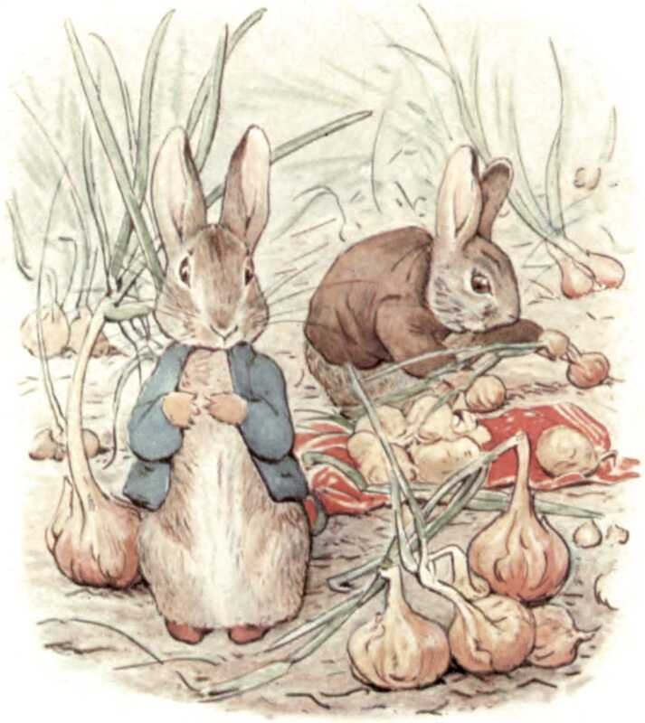
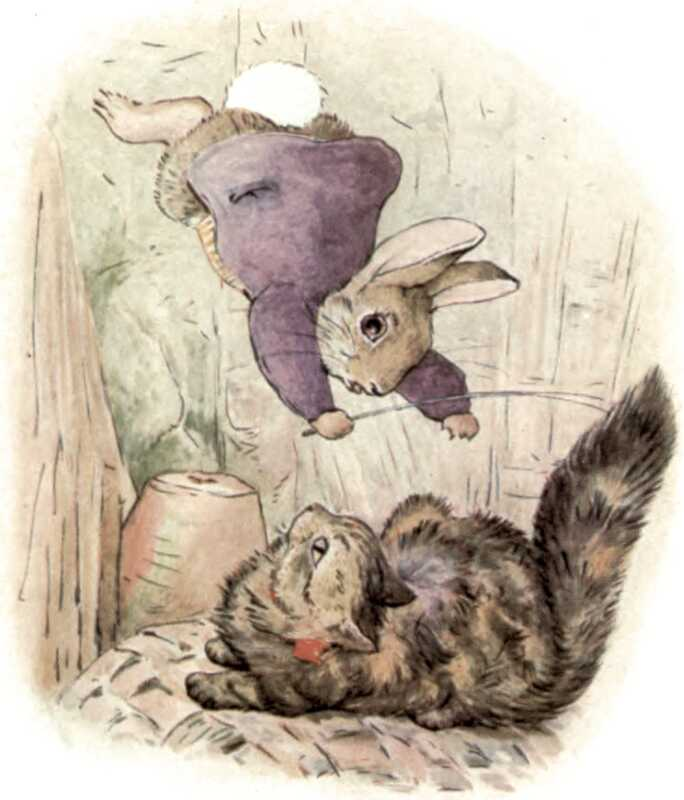
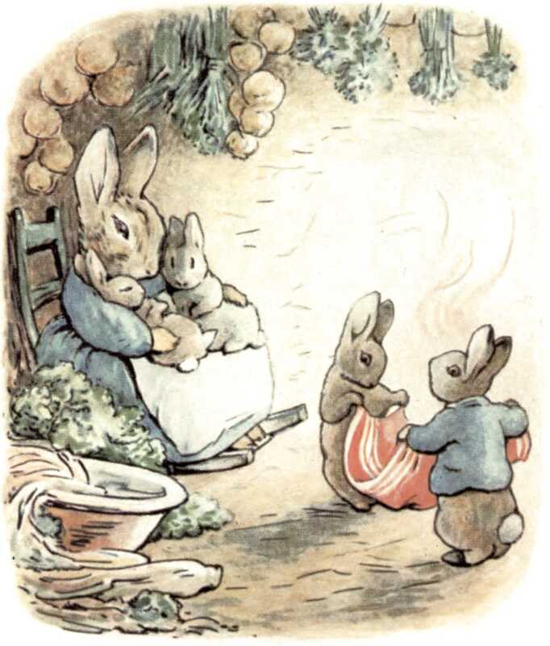

The Tale of Benjamin Bunny
- 班傑明兔的故事
- 給英文初學者的故事導讀：從 Benjamin Bunny 認識彼得兔的世界
- 作者與插畫：Beatrix Potter
Wiki 出處：sources ｜ 氛圍依據：the-wood
· 1 ·
這堂課你會學到
- 故事大綱：七段劇情，從出門到回家
- 認識角色：兩隻小兔子和四個大人
- 認識地點：樹林、兔子洞、花園
- 十個英文單字和三題小測驗
- 延伸：Wiki 收錄的五篇故事怎麼連在一起
氛圍依據：fir-tree-rabbit-hole
· 2 ·
前情提要Peter 的衣服去哪了？
- 媽媽交代不准去 Mr. McGregor 的花園 ｜ "don't go into Mr. McGregor's garden."
- Peter 很調皮，直接跑進花園 ｜ "But Peter, who was very naughty, ran straight away to Mr. McGregor's garden."
- 被追的時候弄丟了兩隻鞋子 ｜ "He lost one of his shoes among the cabbages, and the other shoe amongst the potatoes."
- 外套和鞋子被掛起來當稻草人 ｜ "Mr. McGregor hung up the little jacket and the shoes for a scarecrow..."
Wiki 出處：peter-rabbit ｜ 氛圍依據：mr-mcgregors-garden
· 3 ·

角色①兩隻小兔子
- Benjamin 和 Peter 是表哥/表弟（cousin） ｜ "nearly tumbled upon the top of his Cousin Peter."
- Benjamin 其實不太想見阿姨/姑姑 ｜ "Little Benjamin did not very much want to see his Aunt."
- Benjamin 在花園裡很自在 ｜ "Benjamin, on the contrary, was perfectly at home"
- Peter 出場時身體不舒服 ｜ "He looked poorly"
Wiki 出處：cousin、benjamin-bunny、benjamin-bunny-character、poorly ｜ 氛圍依據：fir-tree-rabbit-hole
· 4 ·

角色②大人們
- 兔媽媽是寡婦 ｜ "Old Mrs. Rabbit was a widow"
- 她靠織兔毛手套和腕套維生 ｜ "she earned her living by knitting rabbit-wool mittens and muffatees"
- Benjamin 的爸爸叫 old Mr. Benjamin Bunny ｜ "The name of little Benjamin's papa was old Mr. Benjamin Bunny."
- Benjamin 判斷 Mr. McGregor 和 Mrs. McGregor 整天都不會回來 ｜ "certainly for the day, because she was wearing her best bonnet."
Wiki 出處：widow、benjamin-bunny、old-mr-benjamin-bunny ｜ 氛圍依據：fir-tree-rabbit-hole
· 5 ·
樹林兔子洞牆梨樹萵苣苗床稻草人溫室
故事地圖
- Peter 一家住在樹林裡最整齊、沙最多的兔子洞 ｜ "in the neatest, sandiest hole of all lived Benjamin's aunt and his cousins"
- 樹林底有一道平頂的牆，從牆頂往下就是花園 ｜ "They went away hand in hand, and got upon the flat top of the wall at the bottom of the wood."
- 花園裡有陽光照著的紅磚牆和木板小路 ｜ "They went along a little walk on planks, under a sunny, red brick wall."
Wiki 出處：benjamin-bunny ｜ 氛圍依據：the-wood
· 6 ·

劇情①Benjamin 出門
- 一天早上，小兔子坐在土坡上 ｜ "One morning a little rabbit sat on a bank."
- Mr. McGregor 和 Mrs. McGregor 坐馬車出門 ｜ "A gig was coming along the road; it was driven by Mr. McGregor..."
- Benjamin 蹦蹦跳跳地出發 ｜ "with a hop, skip, and a jump"
- 去拜訪住在花園後面樹林裡的親戚 ｜ "to call upon his relations, who lived in the wood at the back of Mr. McGregor's garden."
Wiki 出處：benjamin-bunny、benjamin-bunny-character ｜ 氛圍依據：the-wood
· 7 ·

劇情②裹著手帕的 Peter
- Peter 看起來不舒服，只裹著一條手帕 ｜ "He looked poorly, and was dressed in a red cotton pocket-handkerchief."
- 他說衣服在稻草人身上 ｜ "The scarecrow in Mr. McGregor's garden"
- 兔媽媽叫 Cottontail（Peter 的手足之一）再去拿洋甘菊 ｜ "Cottontail! Cottontail! fetch some more camomile!"
- Peter 說去散步也許會舒服一點 ｜ "Peter said he thought he might feel better if he went for a walk."
Wiki 出處：benjamin-bunny、scarecrow ｜ 氛圍依據：fir-tree-rabbit-hole
· 8 ·

劇情③從梨樹爬進花園
- 兩人走到牆頂，看見稻草人身上的衣服 ｜ "Peter's coat and shoes were plainly to be seen upon the scarecrow"
- Benjamin 說正確的進法是爬下梨樹 ｜ "the proper way to get in is to climb down a pear-tree."
- Peter 頭朝下摔下去，還好苗床很軟 ｜ "Peter fell down head first; ... the bed below was newly raked and quite soft."
- 他們留下很多小腳印，穿木鞋的 Benjamin 特別多 ｜ "They left a great many odd little footmarks ... especially little Benjamin, who was wearing clogs."
Wiki 出處：benjamin-bunny ｜ 氛圍依據：mr-mcgregors-garden
· 9 ·

劇情④拿回衣服、裝洋蔥
- 衣服拿回來了，但鞋子進水、外套縮水 ｜ "there was water in the shoes, and the coat was somewhat shrunk."
- 用手帕裝洋蔥當禮物 ｜ "they should fill the pocket-handkerchief with onions"
- Benjamin 說他常和爸爸來這裡拿萵苣 ｜ "He said that he was in the habit of coming to the garden with his father to get lettuces..."
- Peter 越來越害怕，眼睛睜得好大 ｜ "his eyes were as big as lolly-pops!"
Wiki 出處：benjamin-bunny、onions ｜ 氛圍依據：mr-mcgregors-garden
· 10 ·

劇情⑤轉角、籃子、貓
- 帶著洋蔥爬不回梨樹，只好往花園另一頭走 ｜ "it was not possible to get back up the pear-tree with a load of vegetables."
- 轉角看到了某個東西（原文這裡用插圖呈現，文字沒寫），大家立刻躲到大籃子底下 ｜ "he hid himself and Peter and the onions underneath a large basket."
- 一隻貓起身，走過來聞籃子 ｜ "The cat got up and stretched herself, and came and sniffed at the basket."
- 貓坐在籃子上五個小時 ｜ "She sat there for five hours."
Wiki 出處：benjamin-bunny、basket ｜ 氛圍依據：mr-mcgregors-garden
· 11 ·

劇情⑥爸爸來救
- old Mr. Bunny（就是第 5 頁的 old Mr. Benjamin Bunny）根本不把貓放在眼裡 ｜ "Old Mr. Bunny had no opinion whatever of cats."
- 他從牆上跳到貓身上 ｜ "He took a tremendous jump off the top of the wall on to the top of the cat"
- 把貓趕進溫室、鎖上門 ｜ "When old Mr. Bunny had driven the cat into the greenhouse, he locked the door."
- 拎著耳朵把 Benjamin 拉出來，用細鞭子打他 ｜ "took out his son Benjamin by the ears, and whipped him with the little switch."
Wiki 出處：benjamin-bunny ｜ 氛圍依據：mr-mcgregors-garden
· 12 ·

結局回家
- 爸爸也把 Peter 拉出來 ｜ "Then he took out his nephew Peter."
- Mr. McGregor 回來很困惑：腳印小得不像話 ｜ "only the footmarks were too ridiculously little!"
- 他也想不通貓怎麼會被從外面鎖在溫室裡 ｜ "he could not understand how the cat could have managed to shut herself up inside the greenhouse..."
- 媽媽因為衣服找回來，原諒了 Peter ｜ "When Peter got home his mother forgave him..."
Wiki 出處：benjamin-bunny ｜ 氛圍依據：fir-tree-rabbit-hole
· 13 ·
單字複習（上）
- cousin 表（堂）兄弟姊妹，這裡指 Peter 所以譯表哥/表弟："nearly tumbled upon the top of his Cousin Peter."
- widow 寡婦："Old Mrs. Rabbit was a widow"
- poorly 身體不舒服："He looked poorly"
- scarecrow 稻草人："The scarecrow in Mr. McGregor's garden"
- clogs 木鞋："especially little Benjamin, who was wearing clogs."
Wiki 出處：cousin、widow、poorly、scarecrow、clogs ｜ 氛圍依據：fir-tree-rabbit-hole
· 14 ·
單字複習（下）
- onions 洋蔥："they should fill the pocket-handkerchief with onions"
- lettuces 萵苣（複數）："First he ate some lettuces and some French beans"
- basket 籃子："he hid himself and Peter and the onions underneath a large basket."
- greenhouse 溫室："kicked it into the greenhouse"
- camomile 洋甘菊："fetch some more camomile!"
Wiki 出處：onions、lettuces、basket、greenhouse、camomile-tea ｜ 氛圍依據：fir-tree-rabbit-hole
· 15 ·
小測驗
- Q1：Peter 的衣服在哪裡？ → 掛在花園的稻草人身上
- Q2：貓坐在籃子上多久？ → 五個小時
- Q3：是誰把貓趕走的？ → Benjamin 的爸爸 old Mr. Bunny
Wiki 出處：benjamin-bunny ｜ 氛圍依據：fir-tree-rabbit-hole
· 16 ·
延伸①：Wiki 收錄的五篇故事
- ① Peter Rabbit：Peter 不聽話，跑進 McGregor 的花園 ｜ "But Peter, who was very naughty, ran straight away to Mr. McGregor's garden."
- ② Benjamin Bunny：兩隻小兔子回花園拿衣服（本簡報主角） ｜ "the proper way to get in is to climb down a pear-tree."
- ③ Flopsy Bunnies：小兔子吃太多萵苣睡著，被裝進麻袋 ｜ "They certainly had a very soporific effect upon the Flopsy Bunnies!"
- ④ Mr. Tod：兩個討人厭的角色，小兔子被偷走 ｜ "a story about two disagreeable people, called Tommy Brock and Mr. Tod."
- ⑤ Mrs. Tittlemouse：愛乾淨的林鼠和不請自來的客人 ｜ "Once upon a time there was a wood mouse, and her name was Mrs. Tittlemouse."
Wiki 出處：peter-rabbit、benjamin-bunny、flopsy-bunnies、mr-tod、mrs-tittlemouse ｜ 氛圍依據：fir-tree-rabbit-hole
· 17 ·
延伸②：角色長大了
- Benjamin 長大後，娶了表姊/表妹 Flopsy ｜ "When Benjamin Bunny grew up, he married his Cousin Flopsy."
- Peter 開了自己的苗圃 ｜ "Flopsy's brother, Peter Rabbit, who kept a nursery garden."
- 第四篇 Benjamin 的孩子被偷走，追蹤途中遇到 Peter 求助 ｜ "Cousin Peter! Peter Rabbit, Peter Rabbit!"
- （推論）第四篇的 old Mr. Bouncer 就是 Benjamin 的爸爸 ｜ "He lived with his son Benjamin Bunny and his daughter-in-law Flopsy"
- （推論）第三篇救小兔子的林鼠 Thomasina，第五篇變成主角 ｜ "she was called Thomasina Tittlemouse, a wood mouse with a long tail."
Wiki 出處：flopsy-bunnies、peter、cousin、old-mr-benjamin-bunny、thomasina-tittlemouse ｜ 氛圍依據：fir-tree-rabbit-hole
· 18 ·
延伸③：五篇的共同模式（推論）
- ① Peter 在花園被追、被網子纏住，最後自己逃出 ｜ "Peter was most dreadfully frightened"
- ② 兩隻小兔子被貓困在籃子底下，爸爸來救 ｜ "he hid himself and Peter and the onions underneath a large basket."
- ③ 小兔子被裝進麻袋，老鼠咬破麻袋救出 ｜ "But Mrs. Tittlemouse was a resourceful person."
- ④ 小兔子被關進烤爐，Peter 和 Benjamin 救出 ｜ "The young family were alive; shut up in the oven!"
- ⑤ 第五篇不一樣：危機是家被不請自來的客人弄亂 ｜ "you seem to have plenty of visitors!"
Wiki 出處：frightened、basket、resourceful、oven、visitors ｜ 氛圍依據：fir-tree-rabbit-hole
· 19 ·
延伸與出處
- 這篇接著第一篇：衣服被掛成稻草人，這篇才去拿回來
- 第一篇 Peter 從表哥/表弟 Benjamin 那裡聽說過貓，這篇兩人真的遇到
- 原文：Standard Ebooks 版 Beatrix Potter《Short Fiction》
- 作者兼插畫家 Beatrix Potter，1943 年過世，台灣著作權保護期已屆滿
- 本簡報每一條文字都來自「英文經典讀本 Wiki」，並可追溯到原文段落；地圖的位置為示意
Wiki 出處：benjamin-bunny、sources ｜ 氛圍依據：fir-tree-rabbit-hole
· 20 ·